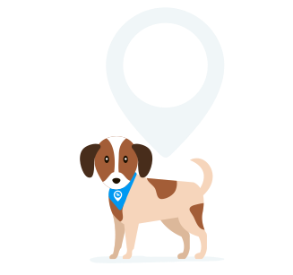
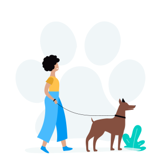
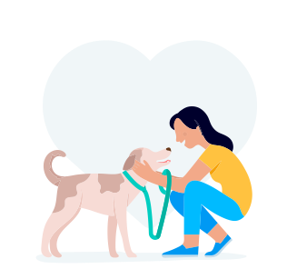

<!--
  Generated template for the WelcomePage page.

  See http://ionicframework.com/docs/components/#navigation for more info on
  Ionic pages and navigation.
-->

<ion-content>
  <div class="div-container">
    <div class="div-btn-saltar"><button class="btn-saltar" (click)="navigateToHome()">Saltar</button></div>
    <div class="div-slider">
        <ion-slides pager="true">
            <ion-slide>
              <div class="div-slide">
                <div class="div-image-slide">
                  
                  <div class="title-slide">Tu mascota segura</div>
                  <div class="text-slide">
                    Todos los paseos cuentan con la protección de
                    <span class="bold">SURA para mascotas,</span> y podrás seguir la
                    ruta del paseador por <span class="bold">GPS</span>
                  </div>
                </div>
              </div>
            </ion-slide>
            <ion-slide>
              <div class="div-slide">
                <div class="div-image-slide">
                  
                  <div class="title-slide">Caminemos juntos</div>
                  <div class="text-slide">
                    Programa un paseo grupal o
                    personalizado para tu mascota, cualquier
                    día y a cualquier hora.
                  </div>
                </div>
              </div>
            </ion-slide>
            <ion-slide>
              <div class="div-slide">
                <div class="div-image-slide">
                  
                  <div class="title-slide">Cuidado permanente</div>
                  <div class="text-slide">
                    Tu mascota es lo más importante por
                    eso te conectamos con paseadores
                    responsables y que amen los animales.
                  </div>
                </div>
              </div>
              <button ion-button class="btn-start" (click)="navigateToHome()">Comencemos</button>
            </ion-slide>
          </ion-slides>
    </div>
  </div>

</ion-content>
